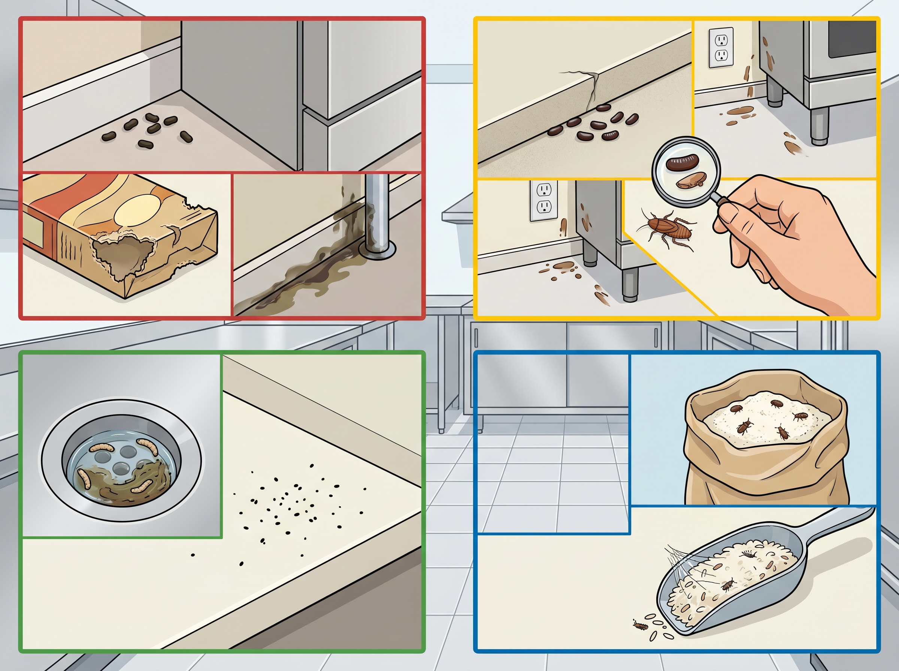
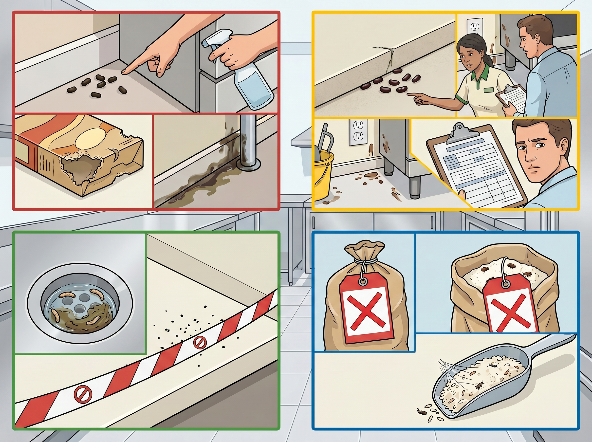
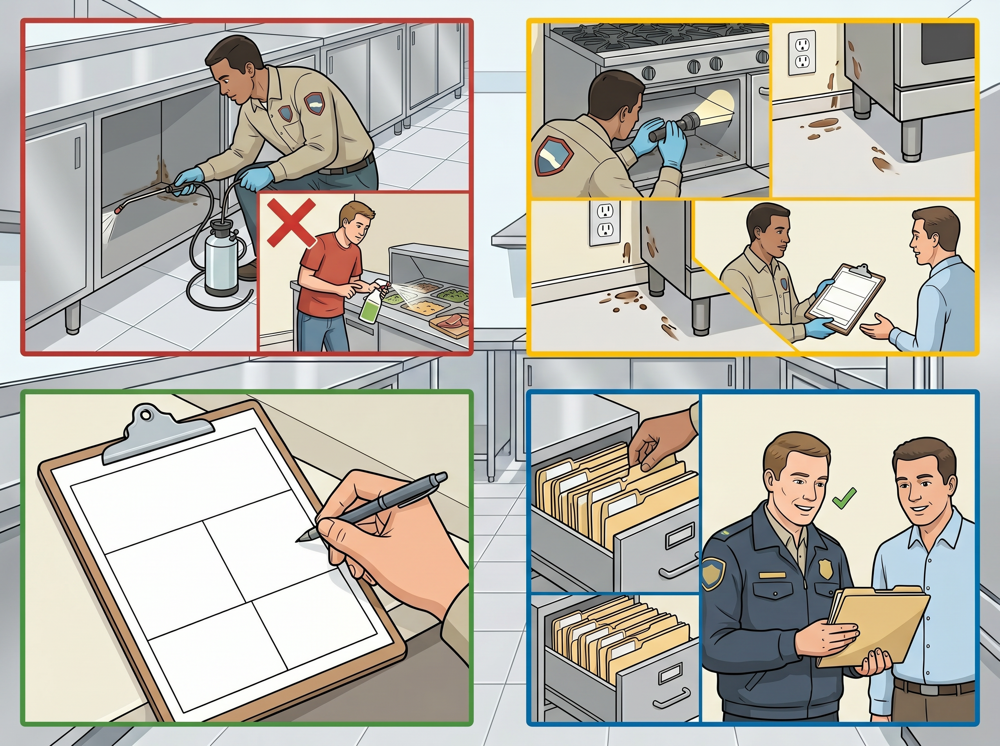
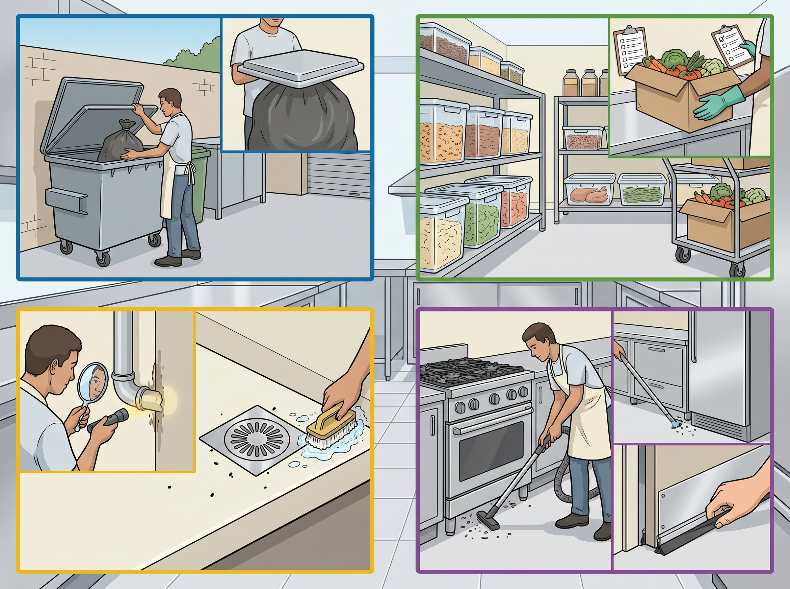

Step 1
Inspect for signs during daily checks
Look under equipment, along walls, in dry storage, near drains, around bins, and behind shelving during opening, cleaning, and close-down checks.

Hygiene · Back of House
Identify pest activity early, report it immediately, isolate affected food or areas, and maintain prevention controls every day.
This SOP explains how staff identify pest evidence, report sightings, isolate affected products or areas, work with licensed pest control contractors, and prevent activity through daily controls.
Applies to all staff and managers working in food preparation, dishwashing, storage, receiving, waste, service, and external bin areas.
Report pest evidence to a manager immediately. Do not wait until the next team meeting or end-of-shift handover.
Step 1
Look under equipment, along walls, in dry storage, near drains, around bins, and behind shelving during opening, cleaning, and close-down checks.

Step 2
Tell the manager immediately. Do not clean evidence before the manager has seen it. Isolate any food, packaging, or area that may have been contaminated.

Step 3
All treatment must be handled by a licensed pest control contractor. Do not use DIY treatments in food areas. File contractor reports with food safety records.

Step 4
Remove waste before close, clean drains, clear food debris, store dry goods sealed and off the floor, check deliveries, report structural gaps, and keep external doors closed.

Reports must include date, areas inspected, evidence found, treatment applied, recommendations, and next visit date.
Isolate affected food, packaging, and equipment. Do not use anything from the affected area until the manager and contractor assess it.
Discard the food and document the disposal. Do not move it to another area or try to clean packaging that may have been contaminated.
Report the defect, arrange repair, and document the temporary control used until the permanent repair is complete.